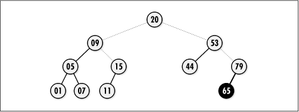
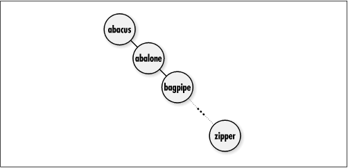

9.5 Description of Binary Search
Trees
Binary search
trees are
binary trees organized specifically for searching. To search
for a node in a binary search tree, we start at the root of
the tree and descend level by level until we find the node we
are looking for. When we encounter a node greater than the
desired node, we follow its left pointer. When we encounter a
node that is less, we follow its right pointer. For example,
to locate 15 in the tree of Figure
9.7, start at the root and move to the left since 15 is
less than 20, then to the right since 15 is greater than 09,
at which point we find 15. If we reach the end of a branch
before locating the desired node, it does not exist.
Of course, the process of searching a binary
tree depends on nodes having been inserted in a similar way.
Thus, to insert a node, we start at the root of the tree and
descend level by level, moving left or right as appropriate.
When we reach the end of a branch, we make the insertion. For
example, to insert 65 into the tree of Figure
9.7, we start at the root and move to the right since 65
is greater than 20, then to the right again since 65 is
greater than 53, and then to the left since 65 is less than
79. This point is the end of a branch, so we insert the key as
the left child of 79. Duplicate keys
are not allowed.

Binary search trees are efficient structures
for searching because in the worst case, we only end up
searching the data in one branch, instead of having to search
every piece of data. Thus, searching becomes an O (lg n) operation, where n is the number of nodes in the tree,
provided the tree is kept balanced. Recall that keeping a tree balanced
means that it will be as short as possible for a given number
of nodes. Keeping a binary search tree balanced is important
because it means that no branch we search will be
exceptionally long.
To understand further the importance of
keeping a binary search tree balanced, consider what happens
as a binary search tree becomes more and more unbalanced. As
this occurs, searching for a node approaches O (n),
which is no better than searching from one end of the data to
the next. For example, imagine a binary search tree containing
216 words from a dictionary inserted in alphabetical order
(see Figure
9.8). In this case, the tree consists of a single branch
to the right, and searching for a word could require
inspecting as many as 216 words. However, if we
insert the words in a random fashion, the tree should end up
at least somewhat balanced, and we can expect to traverse
closer to lg 216 = 16 words in the worst case.
Since normally the order in which nodes are inserted and
removed is not something we can control, we cannot rely on
this method to keep a tree balanced. Instead, we must take a
more proactive approach.

|